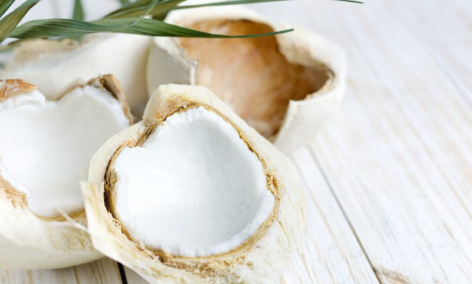
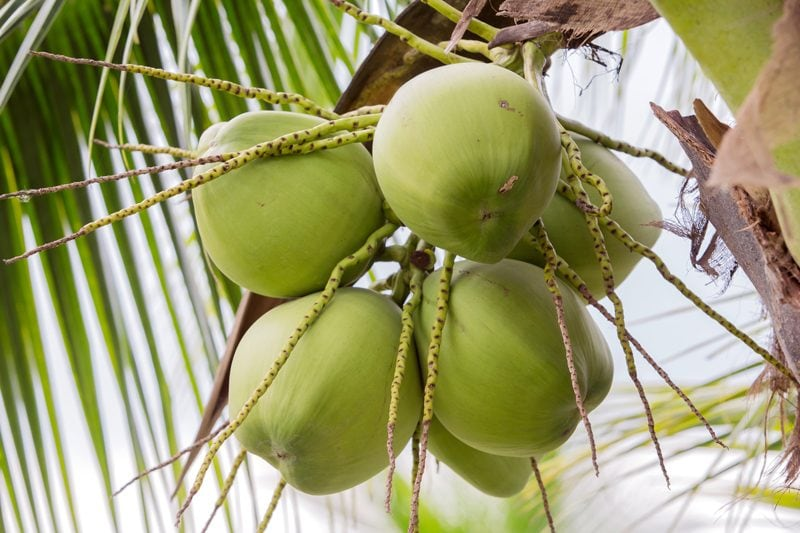
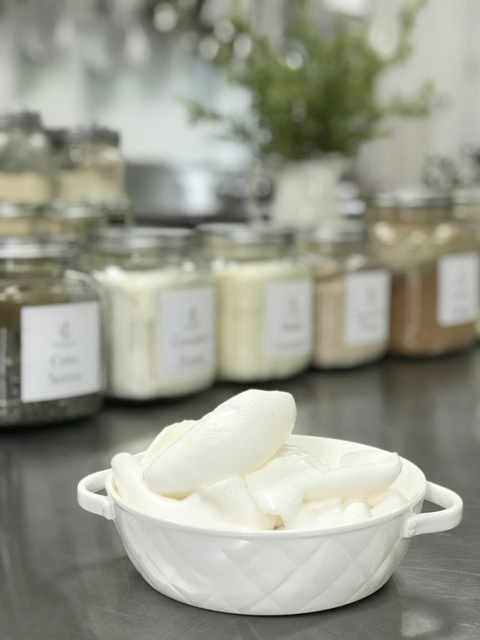

Young Thai Coconuts – The Inside Scoop
Young Thai Coconuts have become an important and popular ingredient in the raw food world. They can be intimating for some people and just flat hard to find for others.
The other day I bought a case of coconuts from Whole Foods. They were on sale, 2 for $5 which is a pretty good deal. Prices can range from $1.50 – $5.00 apiece, depending on where you get them. When I find a good deal, I buy 1 or 2 cases, then process, and freeze all of them.

It may not be as optimal as buying fresh and using fresh, but I do the best I can when I can. I hope that some of the information that I provide below, it will help de-mystify this amazing fruit!
The inside of a Young Thai Coconut can be a real mystery. They can look all dreamy and beautiful on the outside but you never know what you are going to get on the inside, much like a box of chocolates!
When you find a recipe that you want to try, it might ask for 2 cups of coconut meat or 1/2 cup of coconut water. The real question is, “Just how many coconuts will I need?” There is NO solid answer for this. You never know what you will get when you crack open a coconut. To show you just how different each coconut is, I documented the amount of meat/flesh and the amount of water/liquid that I got from each coconut.
From One Coconut to Another
- Coconut — Liquid 386 g = 1 3/4 cups ~~~ Flesh 94 g = 1/2 cup
- Coconut — Liquid 342 g = 1 1/2 cups ~~~ Flesh 100 g = 1/2 cup
- Coconut — Liquid 312 g = 1 1/2 cups ~~~ Flesh 124 g = 1 cup
- Coconut — Liquid 396 g = 1 3/4 cups ~~~ Flesh 118 g = 3/4 cup
- Coconut — Liquid 412 g = 2 cups ~~~~~~Flesh 54 g = 1/4 cup
- Coconut — Liquid 468 g = 2 1/8 cups ~~~ Flesh 204 g = 1 3/4 cup
- Coconut — Liquid 196 g = 1 cup ~~~~~~~ Flesh 36 g = 1/4 cup
- Coconut — Liquid 312 g = 1 1/2 cups ~~~ Flesh 132 g = 1 cup
- Coconut — Liquid 302 g = 1 1/2 cups ~~~ Flesh 96 g = 1 3/4 cup
As you can see the weight and volume of each coconut were all over the board. Sometimes the flesh was thick and hard to get out and other times it was almost jelly-like. Both taste just fine. The more mature a young coconut is, the thicker the flesh, but to be honest I have yet been able to judge a coconut by its outward appearance.
In all the years that I have been cracking and opening these amazing jewels, I have witnessed pink flesh, no flesh, super thick flesh, and jelly-like flesh. My best advice is to always buy 2 coconuts more than what you think you will need. And if you get a bad one just return it to the grocery store. Most stores are usually good about exchanging them.
- Once you remove the meat from the shell, rinse it under the faucet to remove any brown flecks that might have stuck to it.
- Do not soak the meat in water, as this can cause it to break down.
- I won’t go into detail on how to open a coconut. There are oodles of YouTube videos on how to do this. You will find that there are tons of different techniques, use the one that YOU feel most comfortable with.
- When I process large amounts of coconuts to freeze, I separate the flesh into two different bags.
- I place all the firm pieces in one bag and the softer ones in another bag. I like to make coconut noodles out of the firm meat. Then the softer meat can be used for cheesecakes, coconut yogurt and so forth.

How to select a Young Thai Coconut:
- Look for white coconuts with the least amount of blemishes.
- Examine at the bottoms. Avoid the ones that have mold, cracks, or large holes in them. These holes can burrow into the coconuts and molds can set in.
- The bottom will have a soft spot, much like the top of a newborn’s head. :) This is fine.
I wrote a post several years ago on how to make milk and cream from Young Thai Coconuts. I also share some of the health benefits. So please visit there if you want to read more about them. You can even take coconut meat, add a little coconut water, blend it until smooth, and set it in the fridge and it will become a firm, smooth yogurt/pudding treat! So, if you are new to using Young Thai Coconuts, I encourage you to give them a try. It can open a whole new world of possibilities. :)

Pink Water & Meat/Flesh:
Is this good or is this bad? I was originally taught that pink inside of a Young Thai coconut was a sign of mold and to stay away from it. A reader brought to my attention that this isn’t the belief anymore, so off I went to investigate.
I am really grateful for that comment because it taught me new information! I have shared before that I now purchase all of my meat/flesh from ExoticFsuperfruits.com. As I was searching the web for more current info on this topic, I landed on one of their pages.
This is what they have to say, “According to the FAO research from the United Nations, the turning pink of the coconut water is due to phenolic-antioxidant compounds that naturally occur in plants: these phenolic-antioxidant compounds are reacting with the enzymes of the coconut water.
Different varieties of coconuts contain different levels of phenolic-antioxidant compounds. The Fragrant variety of the Thai coconuts that we are using for our coconut water is particularly rich as far as these organic antioxidants compounds are concerned. Phenolic-antioxidant compounds have been widely studied in the wine and beer industry. These organic compounds will cause white wine, champagne or beer to occasionally turn pink or brown unless chemically treated and or preserved.
It is very important to understand that the pinking that we are observing with the coconut water is not creating any harmful substances. There is no connection between the pinking process of the coconuts with hygiene standards, levels of bacteria, nor any other contamination. The concentration of the phenolic-antioxidant compounds seems to vary from plant to plant and therefore from coconut to coconut.”
© AmieSue.com